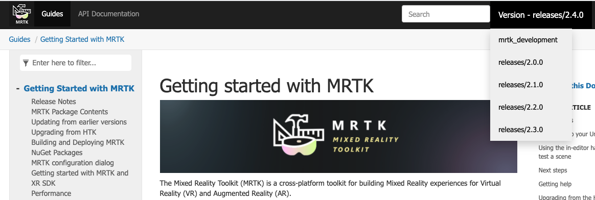

MRTK へようこそ

Mixed Reality Toolkit (MRTK) は Virtual Reality (VR) と Augmented Reality (AR) のための Mixed Reality エクスペリエンスを構築するためのクロスプラットフォームのツールキットです。
開発
MRTK や Unity での Mixed Reality 開発が初めての場合は、Unity 開発ジャーニー のはじめから始めることをおすすめします。Unity 開発ジャーニーは MRTK の開始点としておすすめです。特に、インストール、コア コンセプト、Unity での MRTK の使用法について説明するために作られました。
Caution
Unity 開発ジャーニーは、現在 MRTK version 2.5.0 と Unity 2019.4 を利用しています。他の構成の場合にも、Unity 開発ジャーニーから始めることをおすすめしますが、インストール手順 もご参照ください。
ドキュメントのバージョン
Warning
訳注: 日本語翻訳ページでは最新のリリース バージョンのみをサポートしており、バージョンの切り替えはできません。
全てのリリース バージョンの完全なドキュメントがあります。mrtk_development ブランチは最も新しく最も素晴らしいですが、アクティブな開発状態にあります。安定性のために、最も大きい番号のリリース ブランチを使うことをおすすめします。バージョンは画面右上のドロップダウンから選択できます。

助けを得る
MRTK による問題に直面した場合や、何かを行うことについての質問がある場合、助けになるリソースがいくつかあります。
- バグ レポートの場合は、GitHub のリポジトリに issue を報告 してください。
- 質問の場合は、StackOverflow または Slack の mixed-reality-toolkit channel を利用してください。Slack コミュニティには 自動招待リンク から参加できます。